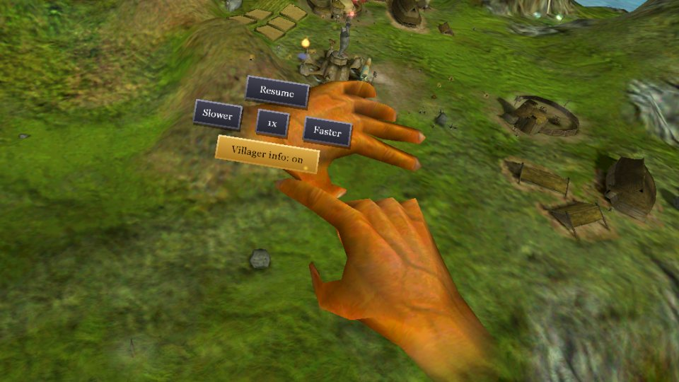
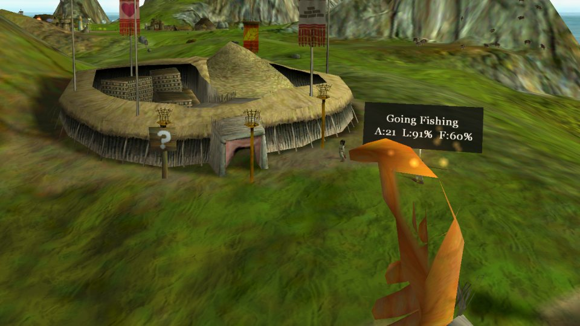
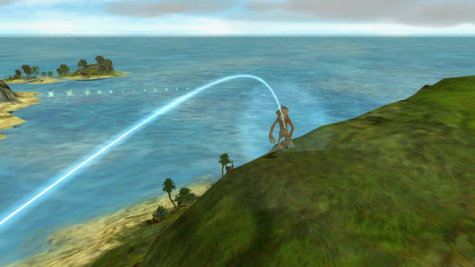
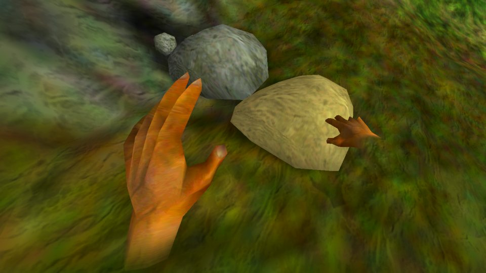

Version 0.4.0
Latest



New
- Wrist controls: glance at the back of your left wrist, like a watch, for Pause, game speed and Villager info. Buttons rise over your forearm: Pause/Resume, Slower · speed · Faster and Villager info. Your other hand points while they're up, with a gold dot at the fingertip: poke a button to press it.
- Villager info in the world: aim your gravity gloves at a villager to see their info on a label over them. Turn it on from your wrist; the label stays upright and easy to read whatever your head's tilt.
- Teleport to your creature: with Teleport movement on (VR Options), aim the teleport at your creature and the line turns pale blue. You land in front of it, within reach to pet or slap. You can teleport away from beside it, too.
- What your hand will grab lights up: rocks, buildings and your creature glow brighter under your hand, instead of the old ring.
Improved
- Slaps need a real swing, so a turn of the body no longer counts as one. No petting or slapping while you hold the teleport button.
- The gravity gloves don't lock on to things your hand merely sweeps past.
- Moving with the stick follows the land: you keep your height above hills and valleys.
- Build scaffolds from further away: up to 20 m from their blueprint.
- Small things keep their detail further into the distance.
- Rocks show up in your palm as soon as you pick them up.
- Poo sits properly in your hand.
- The moon stays upright when you tilt your head.
Fixed
- Planting trees works again, from the ground or from up to 12 m above it: a tree held roughly upright is stood up straight as it lands. Before, a tree held the way your hand naturally holds it leaned too far and fell over dead. Held sideways, it still falls, and the hand shows "Plant" only where the tree will be planted.
- Frozen creature: a creature that stops listening to the leash is now freed automatically.
Installer 1.0.19
- Pictures in the VR features tab, showing what the mod does.
Known issues
- Picking up rocks and trees while sweeping past can still feel a moment late. It has its own playtest coming.
- "trigger - continue" still shows on some lines that go away by themselves. Waiting works too.
- Menu clicks can now and then stop registering for a moment. Pointing away and back, or closing and reopening the menu, brings them back.
- Menu tick sounds may not play when the laser moves over the menu's buttons.
- The hand looks see-through from behind when you look down your wrist.
- The Welcome to VR window has small gaps in its top border.
- Pouring food or wood from high up: the stream doesn't quite reach your hand.
- The gravity gloves' motes can look slightly choppy.
- Nothing can be picked up while the game is paused, as in the flat game. Press Resume on your wrist first.